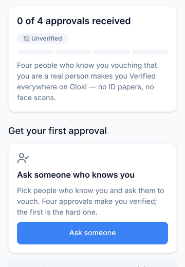
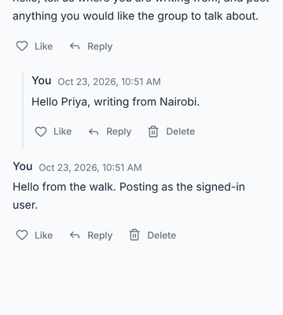

You get in because people who know you vouch for you.
Gloki is a network for deciding things together across borders. Four people who know you confirm you are real: no ID papers, no face scans, nothing to pay. It is in test now. Pick your line and join the waitlist.
You · interchange
The stations: how you get in
Every stop is a real screen in the test version. Nothing here asks for your papers, your face or your money.
-
1 Create a key
Gloki has no passwords. One tap makes your key and signs you in.
Right now the key works like a password: whoever types it in is you. We say so on the screen where you make it.
-
2 Save your key
It is the only way back into your account. Gloki cannot reset it, so you copy it or download it before you go on.
-
3 Say what you are
A person, an organisation, or someone who will host a node. An organisation is declared, not checked, in this test.
-
4 Four people vouch for you
People who know you confirm you are a real person. That, and nothing you pay or upload, is what makes your voice count. You ask someone you know; a video call and a daily session are there for the rest.

The verification screen in the test version. -
5 Verified
Verified everywhere on Gloki, and able to vouch for the next person. Four approvals is the whole of it.
-
6 The forum
One conversation shared by everyone in the test. Post, reply, like. Your name and your country's flag, not a code.

The forum in the test version.
Three lines in
Pick the one that fits. They all arrive at the same place.
-
Solve global issues first invitees
Academics and world federalists who already argue about problems no single country can fix, and want a place where a global “we” can decide something and say it out loud.
-
Build digital democracy
Civic-tech people, organisers, researchers. One person, one vote. Vouching instead of ID. Talk before any vote. The mechanism is the product; help shape it while it is small.
-
Contribute to a new internet planned line
People with a server. A node is a small computer that keeps a copy of the network, so no single company holds it. The node software is not ready yet. Joining this line records your interest, and we write when there is something to run.
Line status
What is running in the test, what is planned, and what comes later. We would rather say it here than have you find out.
| Service | Status | Notes |
|---|---|---|
| Sign-up with a key, no passwords | In test | The key is not yet signed on the network; it works like a password. |
| Four people who know you vouch | In test | Ask someone, invitations, a video call, a daily session. |
| Three kinds of account | In test | Person, organisation (declared, not checked), node contributor. |
| One shared forum | In test | Post, reply, like. English only for now. |
| Your own agent holding your data | In test | Runs on the project's node for now. |
| Host a node | Planned | No runnable node yet. Joining the line records interest. |
| Problem → Discussion → Solutions → Vote → Mandate | Later | Comes back once the network has verified people in it. See it in the demo. |
Who is building it
Gloki is a project of the Young World Federalists, built in the open. The app's code is public, and the network runs on nodes that people, not a company, will carry.
Questions, or an organisation that wants in? Reply to the first email the waitlist sends you. A person reads it.
Where to look
The full demo, with the democracy pipeline that comes back later.
The source on GitHub.